The Garden Cart
Co-Designer
Meg is a Retired Science teacher. Meg likes reading, cooking, traveling, and gardening. Meg likes to spend many hours gardening; however, as she has knee issues and gardening requires bending her knees down often to pick things up or pot plants, she has to take breaks during gardening. Meg tends to misplace her gardening tools and her coffee cup while gardening, as she does not have one centralized location where she keeps her tools.
Co-Designer Needs Statement
- Meg needs to minimize bending as she plants in her garden.
- Meg needs a portable high surface to place plants as she harvests and weeds her garden.
- Meg needs a place to put her coffee cup as she gardens.
- Meg needs a centralized location where she keeps all her tools.
Product Requirements
- Stable
- Water resistant
- Rot and mold resistant
- Four sturdy wheels with breaks (must be able to roll on stone, dirt, and pebbles)
- Can hold 20.5kg +
- Easy to clean and removable “tray”
- Storage/holder for: clippers, trowel, plant tags, 3x5" inventory cards, sharpie, pencil, wire for plants, plant knife, weeder, space for 1-2 seasonal items, and coffee or water
- 76.2 cm tall to the bottom of the “tray”
- 86.4 - 91.4 cm overall height
- Single 38.1 cm long handle to move around
- 38.1 x 50.8 cm inside the frame
- Max 43.18 x 50.8 cm outside the frame
- Umbrella holder or space to clip mini umbrella
Initial Brainstorming Narrative
I wanted to help Meg be able to garden for extended periods with more ease. I assessed the solutions she had tried before, such as setting up multiple potting benches around her garden; I found that this method took up too much space and was not effective in helping her keep track of her tools, but this method was effective in that it is a high surface she can work on. I utilized the idea of an elevated surface to develop the concept of a portable high surface. I researched gardening carts and other mobile carts to understand existing products. I found that current products were not portable, the wrong height for Meg, or not for outdoor use. One of my original ideas did not have to do with gardening. My idea was to design a cart to bring groceries from Meg’s car to her kitchen easily, so she would have to bend her knees less. As Meg's primary issue had to do with gardening I took the idea of a grocery cart and altered it to a gardening cart. The main aspects of the gardening cart were that it would be a sturdy, metal, portable high surface that is a centralized location to keep gardening tools, with the feature of height adjustability. I discarded the idea of height adjustability, as it would have caused the design to be flimsy. I decided the design would be constructed out of wood rather than metal due to the risk of sharp edges. The concept I am moving forward with is a wooden, high, portable, stable surface to replant plants on, hold weeds and harvested plants, and is a centralized place to keep gardening tools and her coffee cup. This design addresses Meg’s need statements and her product requirements while being cost-effective and sturdy.
Initial Prototype
I aim to help my co-designer, Meg, have more ease as she gardens. Meg experiences knee pain as she gardens from bending over. When Meg can garden with less knee pain, she will work in her garden for more extended periods of time.
With the second prototype, I focused on the cart's dimensions, identifying which height of the cart works best for my co-designer, and I focused on testing the strength of the bus tub. I did not test the product's width or with materials that would be in the high-fidelity prototype.
After understanding the dimensions, the cart should have, I can move on to my third prototype. The product will be used outdoors and on many different surfaces. I assume my co-designer will wash the bus tub once a month, so the bus tub has to be easy to clean, so the tub I chose is simple to wash and dishwasher safe. I assume that my co-designer will only use the design outside and not have to carry it upstairs.
Bill Of Materials
- Walker - Free (from co-designer)
- Plant - Free (from co-designer’s garden)
- Cultivator - Free (from co-designer)
- Two Five Pound Weights - Free
- Rubbermaid Bus Tub 15 x 20″ - $15.84


Testing Plan
I inserted the 15 x 20″ Rubbermaid Bus Tub in the top of the walker and made sure the bottom of the tub was 30″ off the ground. My co-designer placed a potted plant in the Bus Tub and tested if the prototype caused her shoulder strain by using a cultivator to dig up her plant. I then put two five pound weights in the tub to check the stability of the tub. My co-designer tested digging with the cultivator sitting down as well. After my co-designer tested the prototype I asked her for feedback.


Test Resutls
Co-Designer’s Rating 1- 10 (Ten being the best)
15 x 20″ Rubbermaid Bus Tub
- Sturdiness - 10
- Depth - 10
- Cleanability - 10
Dimensions Tested
- Height at 30″ - 10
- “I like that it is standard, so it can be replaced,” Meg said about the bus tub. My co-designer liked the height at 30″ for both standing and sitting. The metric I used to measure whether sitting worked was if my co-designer experienced any shoulder strain while she was planting. Meg did not experience shoulder strain while sitting or standing.
Prototype Conclusions
I am ready to move on to my next iteration as I know the measurements that work best for my co-designer. The product works best at the height of 30″. What needs to be tweaked is the weight of the cart: there needs to be more weight at the bottom of the cart, so the cart is not too heavy on the top of the cart. This issue will be adjusted as there will be wheels at the bottom of the next iteration.
Note: The technical drawing and the tested prototype are different as I used the materials I had readily available to test the design before moving on to using materials that will be in my high-fidelity prototype.


Final Prototype
Bill of Materials
- (1 Piece) 15 x 20" Grey Bus Tub – $15.84 Link: https://www.homedepot.com/p/Rubbermaid-Commercial-Products-16-Qt-Bus-Utility-Box-in-Grey-RCP3349GRA/100642673
- (1 Set) 5" Swivel Caster Wheels – $29.99 Link: https://www.amazon.com/Swivel-Caster-Wheels-Locking-Polyurethane/dp/B08BTM4RD3/
- (1 Piece) Barn Door Handle Black – $12.99 Link: https://www.amazon.com/FaithLand-Handle-Sliding-Cabinet-Closet/dp/B08ZCMMW9F/
- (16 Pieces) 1/4 x 1" Bolts – Price varies
- (16 Pieces) 1/4" Spring Washers – Price varies
- (16 Pieces) 1/4" Flat Washers – Price varies
- (7 Pieces) 1-3-6 Select Doug Fir BOA $4.00 each $28.00 total Link: https://www.lowes.com/pd/1-x-3-x-6-Select-Doug-Fir-Board/3196019
- (8 Pieces ) 2x8in Medium L Angle $2.18 each $17.44 total Link: https://www.homedepot.com/p/Simpson-Strong-Tie-ML-2-in-x-8-in-12-Gauge-ZMAX-Galvanized-Medium-L-Angle-ML28Z/308149436
- (2 Screws) 10 x 3/4" Self Drill Screws - Price Varies
- (80 Screws) 8 x 5/8" Steel Flat Head Wood Screws - Price Varies
- (40 Screws) 8 x 2" Exterior Wood Screws - Price Varies
- (2 Screws) 8 x 1.25" Exterior Wood Screws - Price Varies
- (1 Piece) 1 QT Clear Wood Water Seal - Price Varies
- Chip Brush 2.5"
- Fine Sand Sponge
- Woodworking gloves
- Mask
- Protective eyewear
- Power Drill
- Screw Driver
- 2 Medium Cardboard Boxes
- Socket Wrench
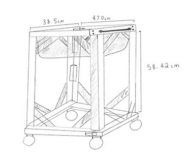
Build Instructions
1. Measure, cut, and mark wood
Put on protective wear throughout the entire construction.
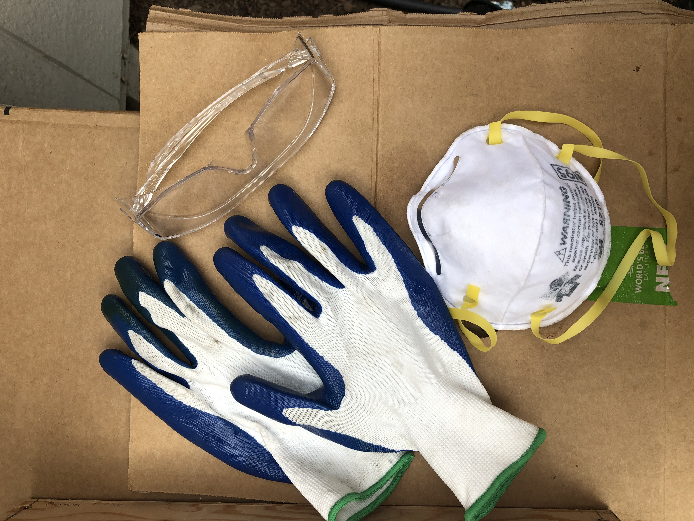
Cut
6 x 38.5cm pieces
4 x 47.0cm pieces
8 x 58.42cm pieces
Mark where screws will go:
On the 6 x 38.5cm pieces mark with pencil at 0.75mm.
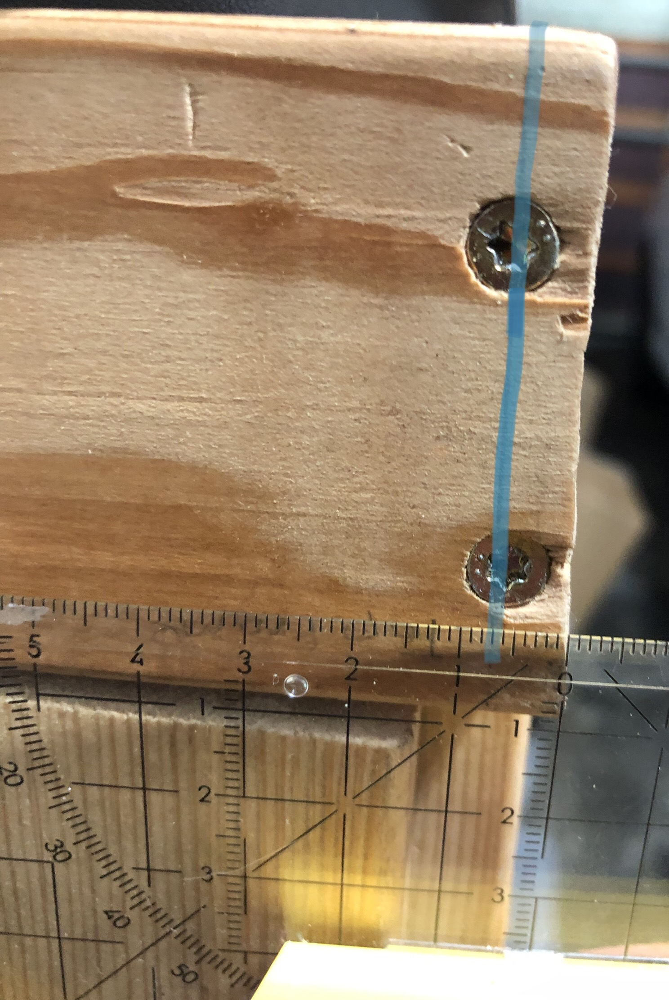
On the 6 x 38.5cm pieces mark with pencil at 1.0mm from the bottom and top of the wood.
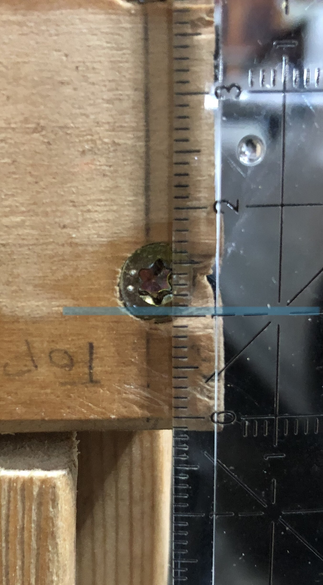
2. Build two frames and build 4 legs
Per frame
2 x (38.5cm Wood)
2 x (47.0cm Wood)
8 x (8 x 2" Exterior Wood Screws)
With a power drill screw together frames in a rectangular shape.
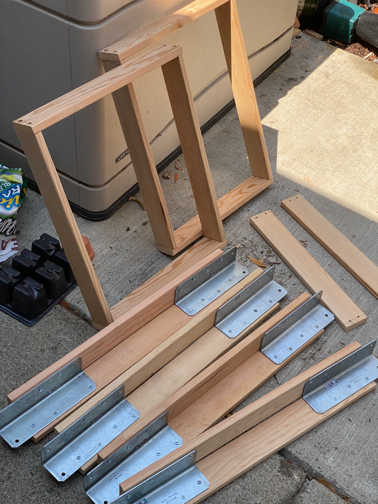
Per Leg
2 x (58.42cm Wood)
2 x (2x8in Medium L Angle)
64 x (8 x 5/8" Steel Flat Head Wood Screws)
With a power drill screw together legs with 2x8in Medium L Angles. Must make sure that the measurements are exact. The metal bracket should hang off the wood 4.5mm. Mark 4.5mm on each side of the bracket and then drill screws.
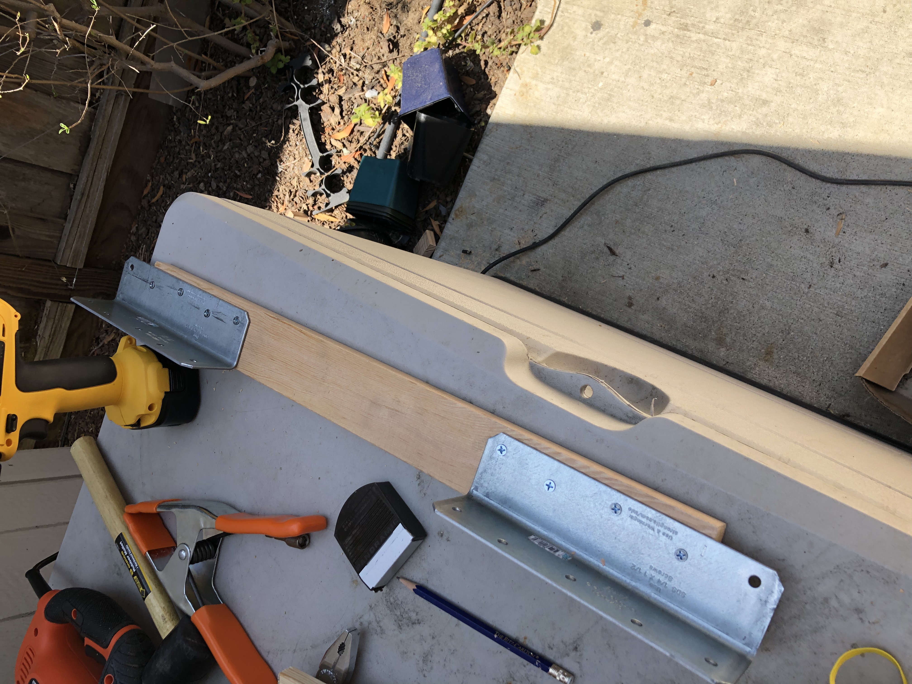
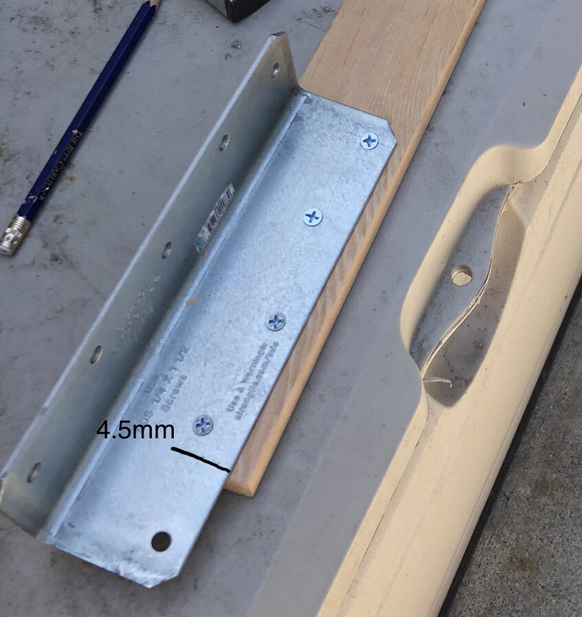
3. Screw together legs and frames together
With a power drill connect frames and legs together with 16 x (8 x 5/8" Steel Flat Head Wood) Screws.
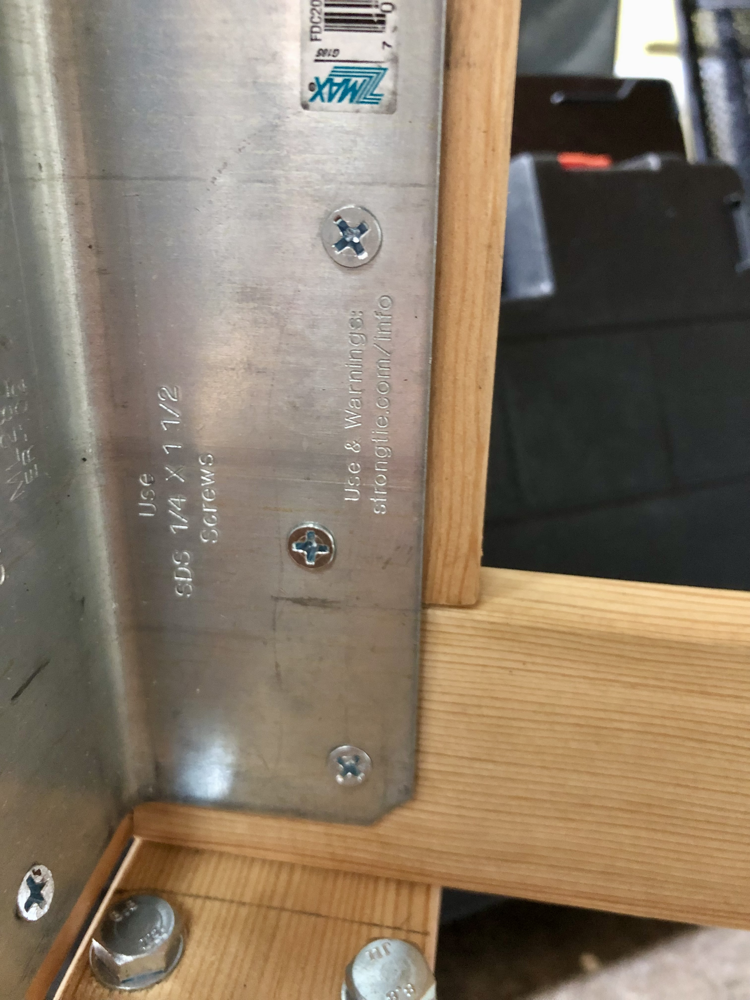
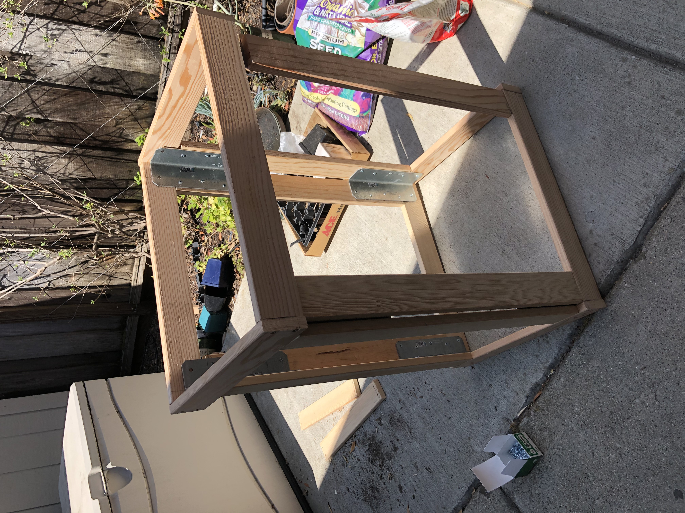
4. Sand legs and frames
Sand with Fine Sand Sponge.
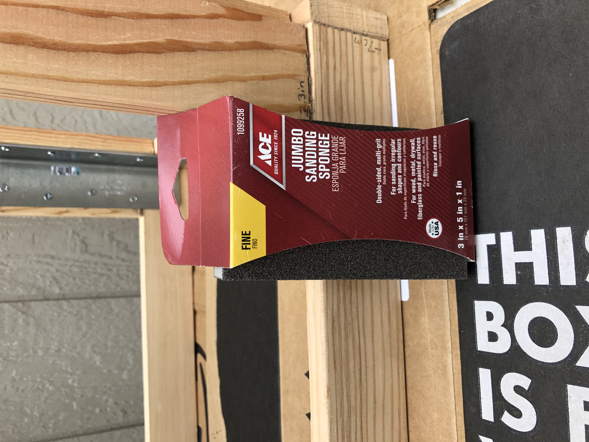
5. Paint wood with water resistant paint.
Place down cardboard to protect surfaces.
Use the chip brush 2.5" to coat the wood with the wood water seal.
Follow drying instructions on the wood water seal before moving on to the next step.
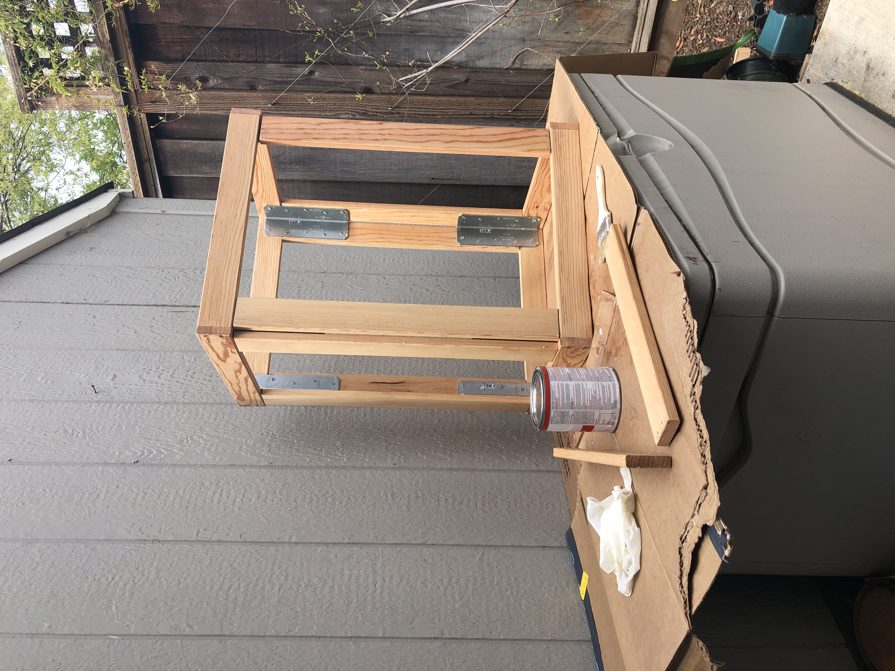
6. Drill wheels onto wood
On two 38.5cm pieces of wood trace the part of the 5" Swivel Caster Wheels that will be screwed on. Mark the wood 2.5mm from the edge of the wood. Make sure measurements are exact.

With a power drill, pre-drill holes for bolts.
16 x (Bolts)
16 x (Spring Washers)
16 x (Flat Washers)
16 x (Hex Nuts)
Put the flat washer and then the bolt through the flat washer in the pre-drilled hole.
Place the wheels over the bolts. Place a spring washer on the bolt and then a hex nut over the spring washer. With a wrench hold the hex of the bolt in place and with a socket wrench tighten the spring washer and the hex nut. Do this for every wheel.
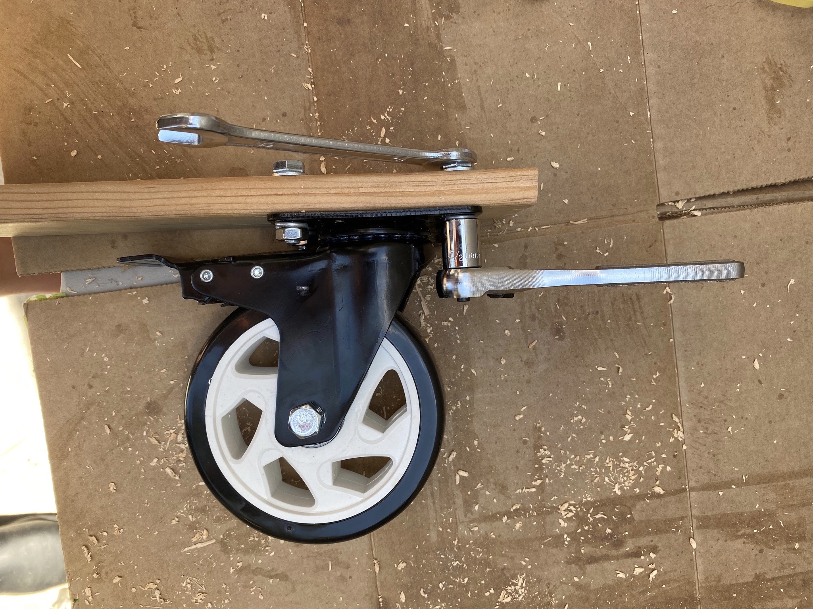
7. Drill wood with wheels onto the cart frame.
Drill 8 x 1.25" screws on the outer side of the wood and drill 8 x 2" screws on the inner side of the wood.
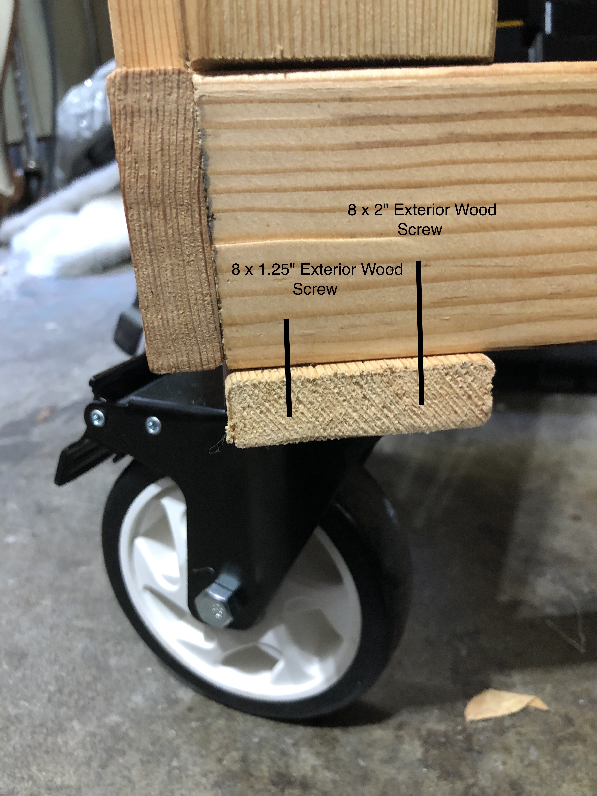
8. Put on handlebar
Choose a 38.5cm side to put the handle bar on.
Mark one of the 38.5cm sides from one edge of the wood at 8.2mm on the x-axis.
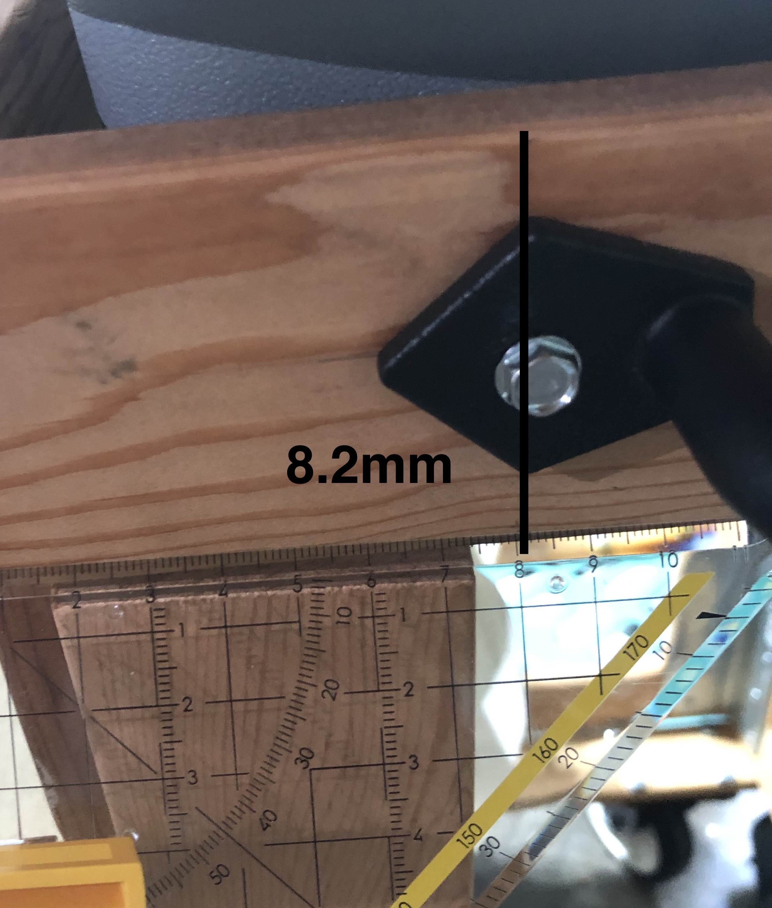
Mark 2.5mm on the y-axis.

Use the socket wrench to screw the barn door handle on with the 2 x (10 x 3/4" Self Drill Screws).
Final Product
Put the Grey Bus Tub in the cart.

I tested my prototype in my co-designers backyard, the location she would use it most. I tested the following: if the wheels roll well, if the wheels’ brakes work, if it fits in small spaces, if it is portable to bring to areas around my co-designers garden, if it works well for harvesting plants, if it works well to repot plants, if it is easy to clean the plastic bin after potting a plant, and if it is water-resistant.
I tested the following tests on my own. I tested if the wheels roll well; I tested rolling the wheels on concrete, grass, pebbles, and dirt. I tested if the wheel’s brakes work; I put the cart on the top of the ground that was slightly elevated without the brakes and tested how the cart performed, and then I tested the brakes by putting the cart on the same elevated ground and tested how it performed. I tested if the wood was water-resistant; I used a hose with an attachment that has a mist setting. I sprayed the water on the wood. I then wiped away the water to test how the wood performed. I tested if the plastic bin was easy to clean after dirt was in it; after my co-designer potted a plant, I took the plastic bin out of the cart, sprayed water on it, and then dried it with a towel.
I tested the following tests with my co-designer. I tested if the cart would fit in the small spaces of her backyard; my co-design pushed the cart through small spaces in her garden. I tested if the cart was portable; my co-designer pushed the cart around different spaces around her garden, such as into the shade. I tested if the cart works well for harvesting plants; my co-designer brought the cart to her apple tree and harvested apples. I tested if the cart works well for potting plants; my co-designer put dirt in the plastic bin and potted a flower. I tested if the handle works; my co-designer tested pulling and pushing the cart around her garden.
ResultsThe wheels could roll well on concrete but work less well on grass and pebbles. The wheels' brakes worked well; When the cart was on the top of elevated concrete, and the brakes were on, the cart did not roll down. The wheels were loud on all hard surfaces; the wheels were louder when the plastic bin was in the cart. The wood was water-resistant; when I wiped away the water with a towel, the wood was not wet anymore. The plastic bin was easy to clean.
The cart could fit in the small spaces in my co-designers backyard with “room to spare,” as my co-designer said. The cart was portable; my co-designer could easily take it to different areas of her garden, such as the shade. The cart exceeded expectations for the harvesting function for both my co-design and me. The cart is a high, movable surface, so as Meg harvests, she does not need to bend down to put harvested plants in a container, and as the cart has a removable bin when she is finished harvesting, she can take the bin out of the cart and bring it inside her car or her house. The cart worked well for potting plants. My co-designer stated the following as she tested potting a flower on the cart “I’m not bending over. My knees and back are straight. The dirt is self-contained.” After potting a flower, she could easily wheel the cart to her desired spot to place the potted plant down. The handle was sturdy, and Meg liked it; however, she said that she would like another handle (of the same model) on the other side of the cart, so from either direction the cart faces her she can pull or push it.
Future Improvements
The look and functionality of The Garden Cart worked. What will be adjusted in the next iteration are the wheels. The wheels may need to be entirely exchanged so the cart can roll on a variety of terrain with more ease and so the cart is less loud as it rolls.
In the next iteration, I will test and add storage to the bottom and or sides of the cart for gardening tools. I will test and add a space to put a coffee cup or water bottle. I will add more stability and support to the card: under the plastic bin, I will add wood, so the bottom is supported, and I will test adding wood for more stability to test if that makes the cart quieter as it rolls. I will also add another handle to the cart.
Scalability
The Garden Cart was designed for my co-designer Meg with specifications to her height and garden. The Garden Cart could be adjusted in height and width for another individual’s height and garden. The Garden Cart is multipurpose, so people with different needs than my co-designer will find the cart useful. For example, the cart design could be adjusted for those who like to garden and who have balance issues to help them get around their garden more easily as they could hold on to the cart for support and place their tools in the plastic bin. The Garden Cart is a product that is adjusted to each individual’s needs, so each cart I make next will be slightly different; however, it would follow the same construction process.
Design Process Reflection
Next time I go through the design process, I would like to do a further external search, and deeper understand what similar products are already available. I learned it is important to understand what is available, what is not available, and what one can improve.